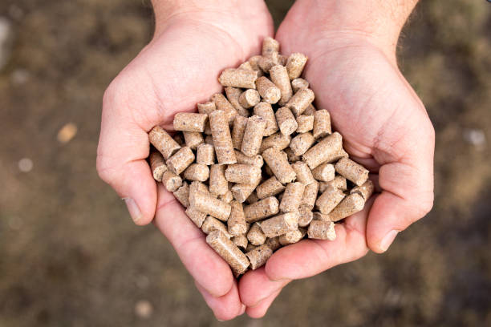

Diet Based On TMR
What Is TMR ?
Total mixed ration (TMR) is a method of feeding goat.
The purpose of feeding a TMR diet is that each cow can consume the required level of nutrients in each bite.
A mixed ration should include good quality forages, a balance of grains and proteins, vitamins and minerals.
,
TMR is a balance formulation diet for a goat which contains equal amount of nutrients for example:
Grains
Protein Feed
Minerals
Vitamins
Dry Matter (lucerne Hay)ALFALFA
(Benefits)
For Goats.
Increase in milk production.
Milk fat and other components can increase.
Increase in meat production.
Rise in kids immunity.
With every bite or mouthful goats will eat a nutrient-balanced ration.
After TMR you don’t need to provide anything else.
Advanages Of Using TMR
A TMR lowers the risk of digestive upset, stabilizes rumen pH and optimizes rumen feed digestion.
TMR mixers can reduce the work of feeding goats and save labor costs.
A TMR provides more control and accuracy over the amount of feed given than separate ingredients.
It’s easier to measure daily feed intake.